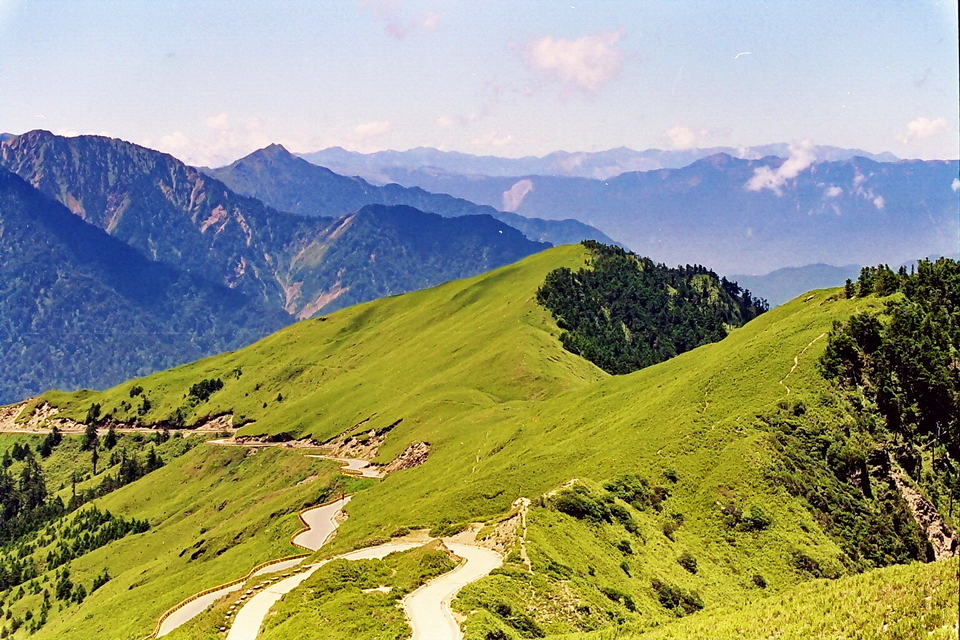

雲海與銀河的交織之地，全台最美的高山雪景聖地

合歡山位於南投縣與花蓮縣的交界處，由七座山峰串聯而成，是台灣最負盛名的高山國家森林遊樂區。這裡海拔高達 3000 公尺以上，卻因為有全台最高的公路「中橫公路霧社支線（台14甲線）」穿過，成為全台灣最容易親近的百岳聖地。合歡山四季景致分明：春季滿山遍野的高山杜鵑怒放、夏季是璀璨銀河與避暑天堂、秋季雲海奔騰、冬季則迎來皚皚白雪，是台灣人一生必訪的朝聖級自然美景。
海拔 3275 公尺的武嶺，是台灣公路的最高點，也是所有單車客、重機騎士與遊客上合歡山必定停留打卡的核心地標。站在武嶺觀景台上眺望，群山綿延的箭竹草坡與蜿蜒的公路盡收眼底，視野極其壯麗。
合歡群峰中，如「合歡尖山」、「石門山」與「合歡主峰」等步道，由於登山口緊鄰公路，單程普遍只需 30-40 分鐘即可輕鬆登頂。石門山更被譽為「台灣最簡單的百岳」，非常適合登山新手前來體驗征服百岳的成就感。
合歡山鳶峰至小風口區域，因高海拔、無光害且大氣透明度極佳，於 2019 年正式獲得國際暗天協會（IDA）認證為「國際暗天公園」。每到夏季夜晚，肉眼即可清晰看見橫跨夜空的璀璨銀河，是全台觀星與天文攝影的終極殿堂。